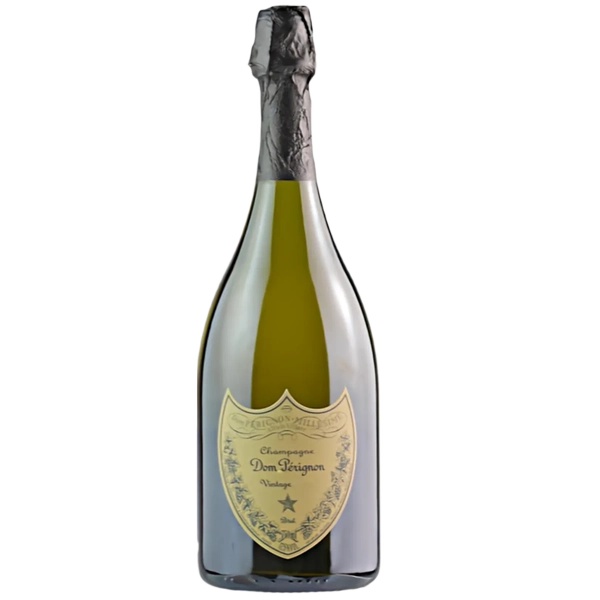

Czym jest wino
Wino to napój alkoholowy otrzymywany w wyniku fermentacji soku z winogron. Proces fermentacji przekształca cukier zawarty w owocach w alkohol i dwutlenek węgla pod wpływem działania drożdży. Wino jest produkowane z różnych odmian winogron, które nazywamy szczepami. Różnorodność szczepów wpływa na smak, aromat, strukturę i kolor wina, co pozwala na tworzenie bogatej gamy stylów i rodzajów win.
Szczepy winorośli, czyli odmiany winogron, dzielą się na wiele różnych kategorii, które można z grubsza podzielić na szczepy białe i szczepy czerwone. Każdy szczep ma swoje charakterystyczne cechy, które wpływają na końcowy smak i aromat wina.
Szczepy win białych
Chardonnay szczep pochodzący z
Francji, znany z wszechstronności. Daje wina o szerokiej palecie
smaków od świeżych i owocowych po bogate, pełne i beczkowane.
Typowe aromaty to jabłka, cytrusy, masło i wanilia.
Sauvignon
zielonych jabłek, agrestu, czasem z nutą trawiastą lub mineralną.
Blanc charakteryzuje się wyraźną kwasowością i aromatami cytrusów,
Riesling szczep o wysokiej kwasowości, często o mineralnym
charakterze. Daje zarówno wina wytrawne, jak i słodkie, o aromatach
jabłek, brzoskwiń, miodu i kwiatów.
Pinot Grigio (we Włoszech) lub Pinot Gris(we Francji) – lekki szczep o łagodnym charakterze,
aromatach cytrusów, jabłek, czasem miodu.
Gewürztraminer – szczep
o intensywnym aromacie, często kwiatowym i przyprawowym (nuty róży,
liczi, imbiru), popularny w Alzacji.
Szczepy win czerwonych
Cabernet Sauvignon jeden z najważniejszych szczepów na świecie, charakteryzujący się wysoką taniną, ciemnym kolorem i intensywnymi aromatami czarnych porzeczek, wiśni, cedru i czekolady. Często dojrzewa w beczce, co wzbogaca smak.
Merlot daje wina o miękkich taninach i owocowych aromatach, takich jak śliwki, wiśnie, a także czekolada. Często łagodniejszy i bardziej przystępny od Cabernet Sauvignon.
Pinot Noir delikatny szczep, typowy dla Burgundii, o jasnym kolorze i eleganckim, owocowym charakterze (aromaty wiśni, truskawek, malin), czasem z nutami ziemistymi.
Syrah/Shiraz w zależności od regionu produkcji, wina z tego szczepu mogą mieć nuty pieprzu, czarnych owoców, śliwek, czekolady. Syrah to nazwa stosowana we Francji, natomiast Shiraz – w Australii.
Tempranillo hiszpański szczep o aromatach czerwonych owoców, śliwek, skóry i przypraw, często dojrzewający w beczkach dębowych.
Sparkling wine
-

Teleki Csaniy
T eleki chardonnay brut w kieliszku ma elegancki, blady kolor z drobnymi bąbelkami. W intensywnym, złożonym aromacie wyczuć można pomarańcze i dyskretną drożdżowość, z odrobiną cytrusów. Na podniebieniu krystalicznie czyste smaki, zwarta struktura i świeża kwasowość podkreślająca jego owocowy charakter. Kremowe, perliste, idealnie zharmonizowane. Zbiory miały miejsce 24 sierpnia 2021 r w winnicy Dobogó. Wino dojrzewało na osadzie 22 miesięce.
-

CAVA LAGRIMA REAL
Bladożółta, słomkowa, jasna cava, z drobnymi i trwałymi bąbelkami. Złożony i intensywny aromat, przypominający białe i pestkowe owoce na eleganckim tle ciasta z nutami kwiatowymi. W ustach okrągłe, dźwięczne, kremowe bąbelki, dobra kwasowość i duża długość, przywołujące wspomnienia mokki i moreli. T a cava jest idealna do delektowania się nią przez cały posiłek. Jego kremowość w ustach zapobiega nasyceniu podniebienia. Jest szczególnie odpowiedni do pieczonych ryb i mięs oraz do tych menu, które ze względu na swoją długość wymagają tej rezerwy, aby uniknąć mieszania się doznań między potrawami.
-
Zardetto Prosecco
Valdobbiadene, Prowincja Treviso, Szczep Glera, Świeże i kwiatowe ze skoncentrowanym aromatem cytrusów, w smaku mineralne z nutami skórki chleba.
-
GostArt
Winnica Gostchorze, Województwo Lubuskie - Szczepy Riesling, Pinot Blanc, Pinot Gris. Wino zrobione metodą tradycyjną (Szampańską).Dominujące aromaty brzoskwiń i zielonych jabłek. W ustach kremowe, z delikatną kwasowością.
-

Pommery Champagne Rose Brut
Delikatny różowy szampan, dojrzewający co najmniej 42 msc. Wyczuwalne aromaty brzoskwiń, nektarynki, czerwonych jabłek z nutą pieczonego ciasta i miodu. Winogrona pochodzą wyłącznie z winnic Premier i Grand Cru. Cukier resztkowy 4g/1l.
-

Bruno Paillard Premiere Cuvee Extra Brut
Okręt flagowy stylu Bruno Paillard, wino najwyższej jakości, produkowane w systemie Solera czyli “wieczystej rezerwy” z 1985 roku. System Solera - do butelek trafia wino najstarsze, z samego dołu i jest uzupełniane z win z kolejnych pozimów, aż do najmłodszego rocznika. Główne aromaty ujawniają aromaty cytrusowe pochodzące ze szczepu Chardonnay, następnie pojawiają się aromaty czerwonych owoców z Pinot Noir, z czasem w kieliszku pojawiają się nuty owoców egzotycznych z Pinot Meunier. Smak żywy, aromaty przechodzą do ust, królują cytrusy.
-

Bruno Paillard Blanc de Blances Grand Cru
Tłoczone wyłącznie z winnic Grand Cru, składa się z win rezerwowych. 25 roczników, począwszy od 1985 roku. Blade, z zielonymi iodcieniami. Aromaty cytrusów (limonka i grejpfrut), białe kwiaty. W ustach cytrusowe z wyraźną nutą mineralności. Idealne do owoców morza.
-

Veuve Cliquot Brut
Aromaty brzoskwiń, mirabelki, gruszki i wanilii. Bardzo eleganckie wino z akcentami brioche.
-

Dom Perignon
Niezwykle elegancki i pełen smaku. W nosie rozwija się zieleń eukaliptusa, mięty i śliwek, kwiat pomarańczy, kardamon, lukrecja. Na podniebieniu jest elegancji, luksusowy w swej prostocie i precyzji. Finisz pełen spójności. Nazwa pochodzi od mnicha Dom Pierre Perignon, któremu przypisuje się odkrycie szampana. T a słynna marka jest nazwana na jego cześć. Przypisuje się mu wypowiedź “Chodźcie prędko, ja pije gwiazdy!” którą miał wygłosić podczas pierwszej konsumpcji odkrytego przez siebie napoju.
-
Luis Roederer Cristal 2014
Dojrzewa w beczkach co najmniej 4 lata w piwnicach, następnie odpoczywa 6 miesięcy w butelkach. Przeważają aromaty cytrusów i zielonego jabłka. Mocna mineralna jakość z nutami białych owoców. Najsłynniejsze wino tego domu powstało aby zaspokoić gusta cara Aleksandra II. Car poprosił Louisa Roedera, aby co roku rezerwował dla niego najlepsze cuvee.